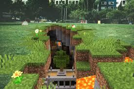

Broken Script
Five Nights at Freddys

Nyaradszereda közösségi szerver
Broken Script
Five Nights at Freddys

Nyaradszereda közösségi szerver
| Szerver neve | IP cím | Kezdés dátuma |
|---|---|---|
| Nyaradszereda közösségi szerver | lesz majd valami | még nem derült ki |
| Broken Script | lesz majd valami | még nem derült ki |
| Five Nights at Freddys | lesz majd valami | még nem derült ki |